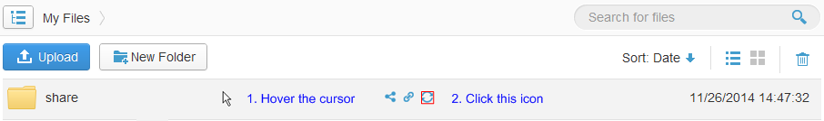

Can I Perform Selective Syncing When My Disk Space Cannot Fit All Data in StorBox?
<<Back to Help CenterBy default, StorBox synchronizes all files to your computer.
If size of the data saved in StorBox exceeds the free space in your disks, you can cancel the synchronization of some files and delete these files from your local disks.
- Log in to StorBox website.
- Hover the cursor over the file or folder and click on the right.

NoteAlternatively, you can right-click the blank area to the right of the file or folder and choose Cancel Sync or choose More > Cancel Sync above the file list.